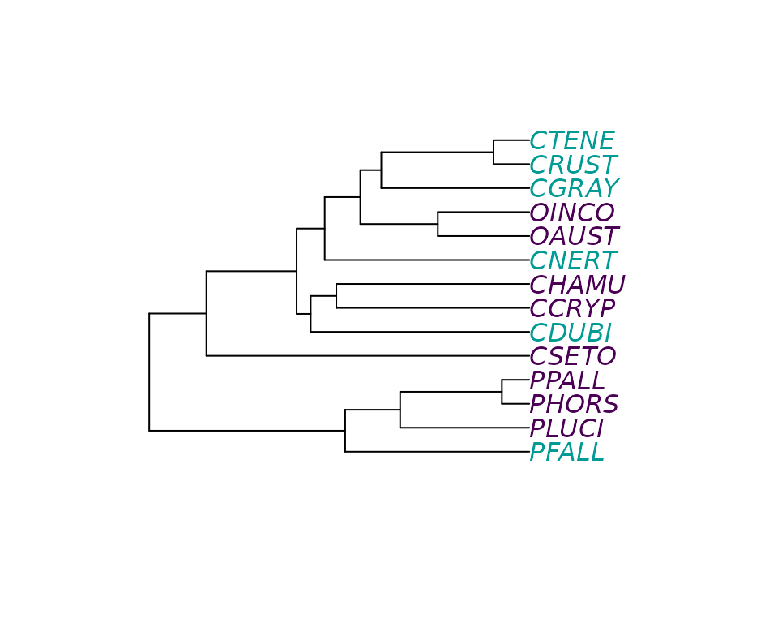
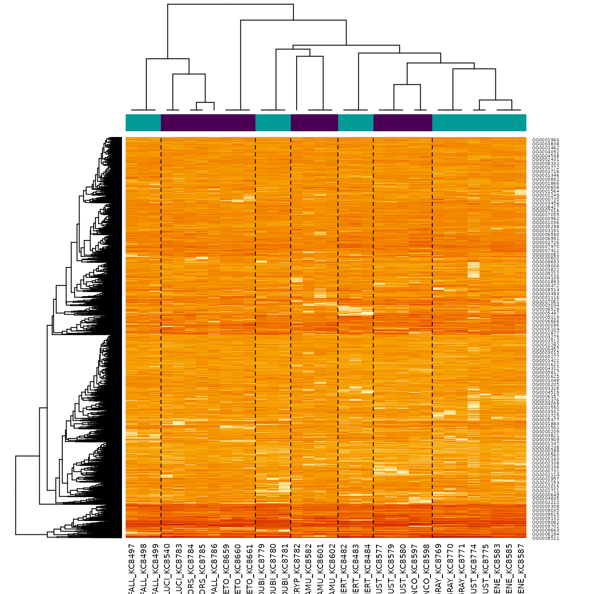
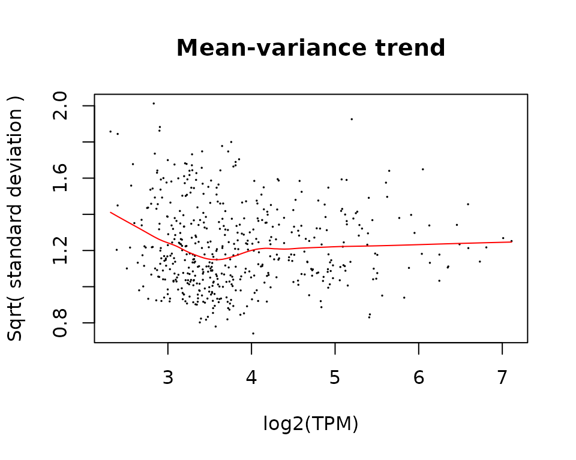
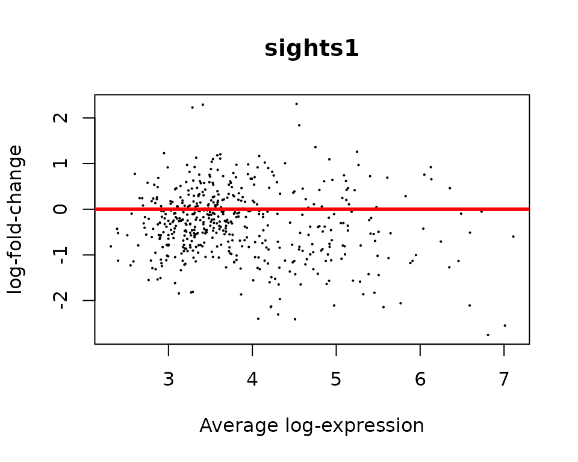
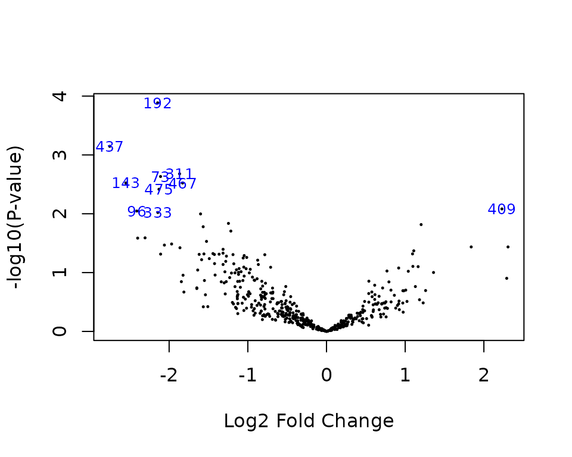
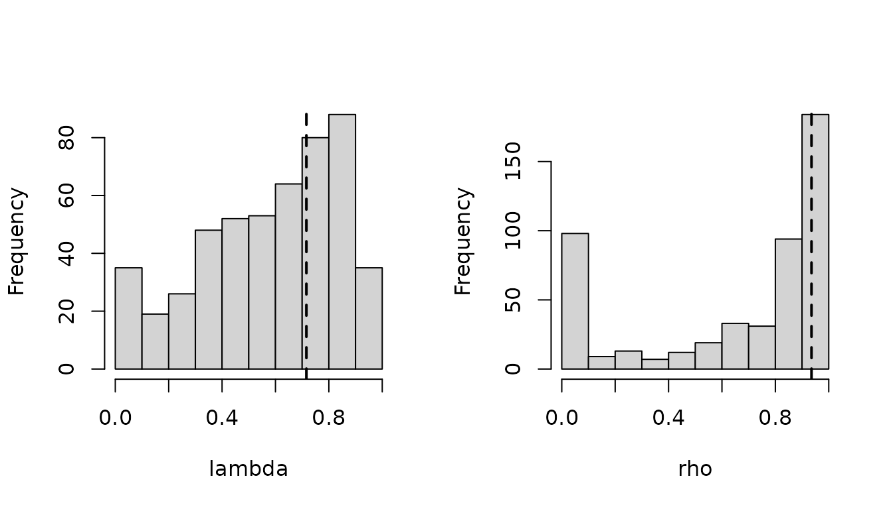

Crayfish Exemple Tutorial
crayfish_exemple_tutorial.RmdData
In this tutorial, we re-analyse the Crayfish dataset from Stern &
Crandal (2018)1, re-analysed in Bastide et al. (2023)2, and
available in the crayfish dataset.
data(crayfish)The dataset contains a count RNA-Seq matrix, associated gene lengths, a phylogenetic tree of the crayfish species included in the study, and a data-frame specifying whether a species is blind (0) or sighted (1). The goal of this script is to detect genes with a significant parallel shift in optimum between blind species versus sighted species (one of the hypothesis presented in the Table from Stern & Crandal (2018)3 ).
library(ape)
cond_species <- crayfish$sights$sights[match(crayfish$tree$tip.label, crayfish$sights$species)]
plot(crayfish$tree, tip.color = hcl.colors(3)[as.numeric(cond_species)])
Normalization of the data
In order to apply phyloDE, we need to normalize the
data. Here, we use TPM, with normalizing factors computed using the TMM
method.
nf <- edgeR::calcNormFactors(crayfish$counts / crayfish$lengths, method = "TMM")
#> calcNormFactors has been renamed to normLibSizes
norm_data <- lengthNormalizeRNASeq(crayfish$counts,
crayfish$lengths,
nf,
lengthNormalization = "TPM",
dataTransformation = "log2")Design matrix
We then construct the design matrix, to analyse the effect of sight on gene expression.
design <- model.matrix(~ sights, model.frame(crayfish$sights))Heatmap matrix
We can plot the data with a heatmap, using the phylogenetic structure on the columns, and a standard clustering on the rows.
phyHeatmap(norm_data, design, coef = 2, crayfish$tree, margins = c(7, 3))
Fit with phyloDE
Finally, we apply phylolmFit, that has a syntax similar
to limma function lmFit. As an additional
argument, it takes the phylogenetic tree.
To keep compilation time low, we only analyse the first 500 genes
here, but in an analysis users should use the full dataset, and
parallelize the computations using the ncores argument.
pfit <- phylolmFit(norm_data[1:500, ], design,
phy = crayfish$tree,
ncores = 1)Empirical Bayes analysis
Just as for a limma object, we can apply the
eBayes procedure to the results.
Keep in mind that because we only analysed the first 500 genes, the results cannot be interpreted directly, and some plots might look different when analyzing the full dataset.
We can check whether there is a trend in the data by plotting the mean-variance trend.
mean_genes <- pfit$Amean
sd_genes <- sqrt(pfit$sigma)
lfit <- lowess(mean_genes, sd_genes, f = 0.5)
plot(mean_genes, sd_genes,
xlab = "log2(TPM)", ylab = "Sqrt( standard deviation )",
pch = 16, cex = 0.25)
title("Mean-variance trend")
lines(lfit, col = "red")
We then apply eBayes, here with a trend.
pfit <- eBayes(pfit, trend = TRUE)And then extract the most significant genes with
topTable.
topTable(pfit, coef = 2)
#> logFC AveExpr t P.Value adj.P.Val B
#> OG0000233 -2.146107 5.563365 -4.267689 0.0001300675 0.06503376 0.8600254
#> OG0000542 -2.754804 6.809075 -3.689281 0.0007137786 0.17844464 -0.5235492
#> OG0000383 -1.867341 3.865850 -3.306827 0.0020945565 0.25035104 -1.3964346
#> OG0000083 -2.108976 4.974603 -3.268331 0.0023280838 0.25035104 -1.4818917
#> OG0000165 -2.549698 7.010650 -3.175764 0.0029952699 0.25035104 -1.6853525
#> OG0000595 -1.829110 5.455000 -3.174662 0.0030042125 0.25035104 -1.6877571
#> OG0000606 -2.129163 4.223682 -3.083829 0.0038348511 0.27391794 -1.8844498
#> OG0000510 2.228829 3.285669 2.789166 0.0082733468 0.45750029 -2.5005188
#> OG0000109 -2.410358 4.508996 -2.756520 0.0089882371 0.45750029 -2.5665289
#> OG0000413 -2.143416 4.219264 -2.734092 0.0095122140 0.45750029 -2.6116046Standard Diagnostics
As for a standard limma analysis, we can perform some
diagnostic plots.
- Plot of p-values: they must be uniformly distributed under the null hypothesis.
hist(pfit$p.value)
- MA Plot: points must be centered in zero, showing no biais.
- Volcano plot:
volcanoplot(pfit, coef = 2, highlight = 10)
- Heatmap restricted to top genes:
topGenes <- rownames(topTable(pfit, coef = 2))
phyHeatmap(norm_data[match(topGenes, rownames(norm_data)), ], design, coef = 2, crayfish$tree, margins = c(7, 6))
Parameters of the OU
Some diagnostic plots are specific to phyloDE, that fits
a OU process per gene, and then regularize the parameters (by taking the
trimmed means of the tanh values).
Function getParameters extract the regularized
parameters.
getParameters(pfit)
#> lambda rho
#> 0.7158580 0.9354393The parameters are the normalized lambda and
rho values:
-
lambdais the ratio of noise attributed to the phylogeny versus the total noise.- Values close to 0 mean that the tree has little influence (independent errors only).
- Values close to 1 mean that there the tree explains all the variance (no independent errors).
-
rhois the percent decrease in trait variance caused by the OU as compared to the variance expected under under BM, see Cornuault (2022)4.- Values close to 0 mean that process looks like a BM (selection strength alpha is close to zero).
- Values close to 1 mean that the tree is close to a star tree (selection strength alpha is large).
The gene-specific and regularized parameters can be plotted with
function plotParameters.
plotParameters(pfit)Histograms are histograms over all the fits on all genes, while dashed lines represent regularized parameters. Modes close to the 0 and 1 bounds can be expected, especially for small parameters.